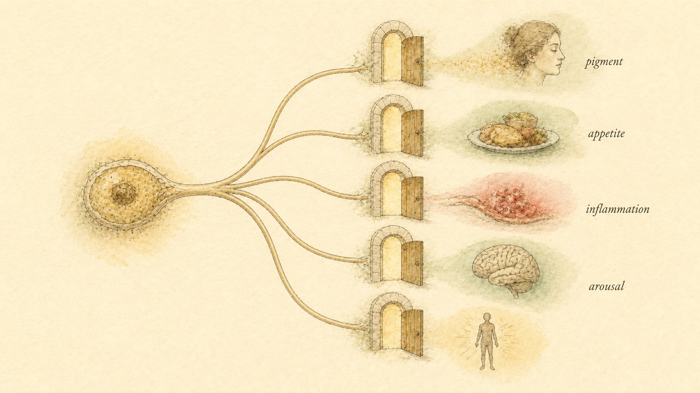
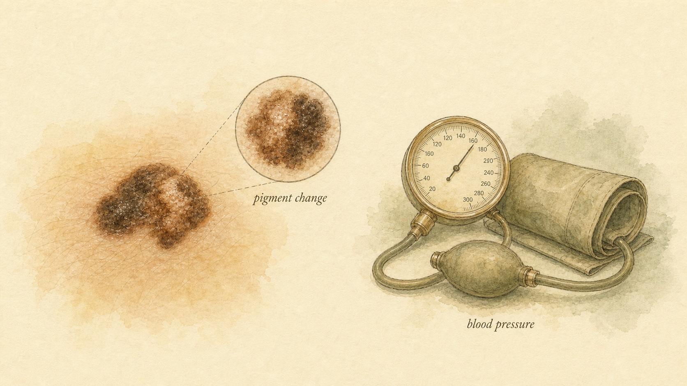

The Melanocortin Switchboard
One small hormone precursor and five receptors reach into pigmentation, appetite, inflammation, and sexual arousal at once, which is exactly why one melanocortin drug carries FDA approval and real trial data while a close chemical cousin remains an unregulated, injectable tanning product tied to case reports of melanoma.
Rosa found both ads inside twenty minutes of each other, scrolling two very different corners of the internet on the same evening. The first was a headline about a prescription her gynecologist had mentioned at a routine visit, a self-injected medication for women dealing with a persistent, distressing drop in sexual desire, approved by the U.S. Food and Drug Administration (FDA) after large randomized trials, sold under the brand name Vyleesi and known in the research literature by its older name, PT-141. The second was a listing on a peptide-vendor storefront, no prescription required, promising a summer tan "from the inside out" with a side benefit of increased libido, sold as a research chemical called melanotan II. To Rosa's eye the two products looked almost like siblings. Both were peptides. Both, according to the marketing copy on each page, worked on something called a melanocortin receptor. Both claimed some connection to sexual arousal. It would have been easy, and Rosa nearly did it, to file the two under one mental heading: melanocortin peptide, does the tanning-and-libido thing, one version happens to be legal and one does not.
That instinct is exactly backward, and untangling why is the entire purpose of this chapter. Bremelanotide, the compound behind Vyleesi, is a real, FDA-approved medicine with a specific, narrow, tested intended use, hypoactive sexual desire disorder (HSDD) in premenopausal women, established through randomized, placebo-controlled trials and carrying a labeled safety warning about blood pressure that patients and prescribers are meant to take seriously. Melanotan II is not approved for anything anywhere, has never completed a controlled human trial for either of the uses it is marketed for, and has accumulated a small but genuinely alarming body of case-report evidence tying its use to darkening, changing, and, in at least one documented case, malignant pigmented skin lesions. The two peptides share a receptor family. They do not share a regulatory status, an evidence base, or a risk profile, and treating them as interchangeable because they are chemical cousins is precisely the category error this chapter exists to correct.
The reason the two can look so similar on a marketing page, and the reason this family of peptides earns its own chapter, is that both descend from one of the more versatile signaling systems in the human body, the melanocortin system: a single hormone precursor and a family of five receptors that between them touch skin pigmentation, appetite and energy balance, immune and inflammatory tone, and sexual arousal, tissues that on the surface have almost nothing in common. Understanding how one small peptide family reaches into all four of those systems, and where each of these two headline compounds actually sits inside it, is what makes the rest of this chapter, and the real difference between Rosa's two browser tabs, legible.
One hormone precursor, five receptors
Everything in this chapter traces back to a single large precursor protein made mostly in the pituitary gland and, to a lesser extent, in the skin and hypothalamus, called proopiomelanocortin (POMC). POMC itself does nothing directly. It is a template that specialized enzymes cut into smaller, biologically active fragments, and which fragment emerges depends on which cell is doing the cutting and which enzymes that cell happens to express. In the anterior pituitary, POMC is cleaved into adrenocorticotropic hormone (ACTH), the hormone that drives the adrenal cortex to produce cortisol. In the skin, the hypothalamus, and elsewhere, a different cutting pattern produces a family of smaller peptides collectively called melanocortins, the most important of which for this chapter is alpha-melanocyte-stimulating hormone (alpha-MSH), along with related fragments called beta-MSH and gamma-MSH. All of these peptides, ACTH included, share a short core sequence of four amino acids, histidine, phenylalanine, arginine, and tryptophan, that acts as the essential key shape recognized by every member of the receptor family described below. According to Cai and Hruby (2016), that shared four-residue core is precisely why building a melanocortin drug that hits only one receptor and nothing else has proven so difficult: the chemistry that different receptors recognize as "melanocortin" overlaps by design, a fact that will matter enormously once this chapter reaches bremelanotide and melanotan II specifically.
The receptors that read these peptides are called, unsurprisingly, melanocortin receptors, numbered MC1R through MC5R, all five of them G-protein-coupled receptors that signal mainly by raising a messenger molecule called cyclic AMP inside the cell once a melanocortin peptide docks onto them. What makes this receptor family worth an entire chapter is not any single receptor's job, it is how differently each one behaves depending on which tissue expresses it, echoing a theme this course has returned to before with other receptor systems: one biochemical event, read completely differently by different cells. According to Novoselova and colleagues (2013), the five melanocortin receptors divide roughly as follows. MC1R sits on melanocytes, the pigment-producing cells of the skin, hair, and eyes, and controls pigmentation by shifting melanocyte output toward darker eumelanin versus lighter, redder pheomelanin, and MC1R also carries out a separate, less publicized job modulating local immune and inflammatory activity in skin and other tissue. MC2R is essentially the ACTH receptor, expressed almost exclusively in the adrenal cortex, where it drives the hypothalamic-pituitary-adrenal (HPA) axis output of cortisol, the one member of the family that responds to ACTH rather than alpha-MSH. MC3R and MC4R are both concentrated in the hypothalamus, particularly the arcuate nucleus and paraventricular nucleus, where they sit at the center of the brain's energy homeostasis circuitry, integrating signals about hunger, satiety, and metabolic rate, with MC4R carrying the added, and for this chapter critical, role of participating in central circuits governing sexual arousal and motivation. MC5R is distributed across exocrine tissue, sebaceous glands, lacrimal glands, and other secretory tissue, where it influences sebum and related exocrine gland output.
The melanocortin system is also, worth noting briefly, an old one in evolutionary terms, conserved across a striking range of vertebrate species, which is part of why so much of the foundational pharmacology behind both headline compounds in this chapter was originally worked out in fish and amphibian pigmentation models before ever reaching human trials. Frog and fish skin darkens and lightens through the same basic melanocortin logic that controls a human tan, and researchers studying that pigment-control system in the mid-twentieth century built much of the receptor pharmacology that later made synthetic melanocortin peptides possible at all. That deep evolutionary conservation is also part of the reason the system reaches so broadly into modern human physiology, a signaling toolkit this old rarely stays confined to one narrow job, and the melanocortin family's spread across pigmentation, the stress axis, energy balance, and now sexual arousal reflects exactly that kind of layered, repurposed biology rather than five unrelated systems that happen to share a receptor naming convention.
Two things follow from this layout that are worth holding onto before this chapter goes any further. First, the same underlying peptide family that lightens or darkens skin also sits at the control panel for appetite, for the stress-hormone axis, and, through MC4R specifically, for sexual arousal, which is not a coincidence of naming but a genuine shared evolutionary lineage: POMC-derived signaling appears to have started as a broad adaptive stress and energy-regulation system, and the pigmentation function, the appetite function, and the arousal function are all descendants of that same ancestral signaling toolkit rather than unrelated systems that happen to share a name. Second, and this is the point that will do the most work in the rest of this chapter, MC1R also carries a meaningful anti-inflammatory and immune-modulating role well beyond skin color. According to Wu and colleagues (2023), melanocortin receptor signaling, including through MC1R, MC3R, and MC4R, maintains immune privilege and dampens inflammation in tissue as specialized as the eye, and according to Böhm and Luger (2019), skin cell types broadly express MC1R and use alpha-MSH signaling to modulate inflammation, oxidative stress, and wound repair independent of any pigment change at all. Holding that anti-inflammatory branch of the family in mind now will make the KPV discussion later in this chapter, and its deliberate contrast with the two headline tanning-and-arousal compounds, considerably easier to follow.

Bremelanotide: a brain receptor, not a blood vessel
Bremelanotide is a synthetic cyclic peptide, closely related in structure to alpha-MSH, that acts as a melanocortin receptor agonist with its dominant activity at MC4R and a secondary contribution at MC3R. It reached the market under the brand name Vyleesi, and the FDA approved it in 2019 for a specific, plainly stated intended use: the treatment of acquired, generalized hypoactive sexual desire disorder (HSDD) in premenopausal women, defined clinically as a persistent or recurrent, distressing decrease in sexual desire not better explained by another medical, psychiatric, or relationship problem. That is a narrow indication, deliberately so, and it is worth being precise about it, because bremelanotide is not marketed or approved as a general aphrodisiac, a treatment for any and every complaint about libido, or a product intended for men, despite melanotan II vendors sometimes implying that "the same peptide family" covers all of that ground indiscriminately.
The mechanism behind bremelanotide's approved use is what most sharply distinguishes it from the older, more familiar category of sexual-dysfunction medication most people have already heard of, the phosphodiesterase type 5 (PDE5) inhibitors such as sildenafil, better known by the brand name Viagra. PDE5 inhibitors work peripherally: they act on smooth muscle in blood vessels supplying the genitals, prolonging the effect of nitric oxide signaling to increase local blood flow. That mechanism can support the physical mechanics of arousal, but it does nothing to generate desire itself, which is why PDE5 inhibitors are not approved treatments for low sexual desire and largely fail to help women whose primary complaint is an absent or diminished wish for sexual activity rather than a physical arousal problem. Bremelanotide works upstream of all of that, centrally, in the brain. By activating MC4R (and, to a lesser extent, MC3R) in hypothalamic circuits already known to participate in motivation, reward, and sexual interest, bremelanotide is understood to act on the neural signal for desire itself rather than on genital blood flow, which is the mechanistic reason it targets a fundamentally different clinical problem than the PDE5 category and is not simply "a female version of Viagra," a comparison that shows up constantly in casual coverage of the drug and that undersells exactly what makes its mechanism interesting.
Bremelanotide's own path to approval is worth a brief note, because it illustrates how a compound's route of administration and its regulatory fate can shift considerably over a long development history without changing the underlying receptor mechanism at all. Early clinical research on this compound, still going by the name PT-141 at the time, tested it as a nasal spray in both women and men, and those early studies are part of what first demonstrated that a centrally acting melanocortin agonist could influence subjective sexual arousal in a controlled clinical setting. The nasal-spray formulation was ultimately not the version that reached approval, later development shifted to a self-administered subcutaneous injection, the form eventually approved as Vyleesi, but the underlying pharmacology connecting MC4R activation to a measurable effect on desire was established well before that formulation question was settled, and it is the same central mechanism regardless of how the peptide is delivered into the body.
The clinical evidence behind that approval is genuinely substantial by the standards of this course, which is worth stating plainly given how much of this chapter's other headline compound rests on far thinner ground. According to Kingsberg and colleagues (2019), two identically designed, randomized, double-blind, placebo-controlled phase 3 trials, together known as the RECONNECT studies, enrolled more than 1,200 premenopausal women with HSDD and found that twenty-four weeks of self-administered, as-needed subcutaneous bremelanotide produced statistically significant improvements in both of the trial's co-primary endpoints, a validated measure of sexual desire and a validated measure of desire-related distress, compared with placebo. According to Simon and colleagues (2022), those benefits held up in prespecified subgroup analyses across a range of ages, body weights, and baseline hormone levels, and according to Simon and colleagues (2019), an open-label, fifty-two-week extension of the same trial population found that the improvements were sustained over a full year of use, with no new safety signal emerging beyond what the twenty-four-week core studies had already identified. That combination, two adequately powered randomized controlled trials, a defined and validated outcome measure, subgroup consistency, and a year of longer-term follow-up, is precisely the kind of evidence base that earns the description "evidence grade: approved, human RCT-supported" rather than the far weaker grades that will apply to most of the rest of this compound family across this module.
What bremelanotide costs: blood pressure, nausea, and the labeled warning
An approved drug with real trial data is not a risk-free drug, and bremelanotide's own trial program is exactly where its most important, clearly labeled safety concern comes from. Because MC4R signaling sits inside hypothalamic circuitry that also touches the autonomic nervous system, activating it centrally does not stay confined to the desire pathway alone. According to Kingsberg and colleagues (2019) and confirmed across the RECONNECT program's longer follow-up by Simon and colleagues (2019), bremelanotide produces a measurable, transient rise in blood pressure and a corresponding transient drop in heart rate following each dose, an effect that resolves within hours in most patients but that is significant enough to appear as a specific labeled warning on the medication, with the manufacturer directing that it not be used more than the specified maximum frequency and flagging particular caution in anyone with existing cardiovascular disease. This is not a theoretical or rare signal buried in a footnote, it is a direct, mechanistically expected consequence of activating a central melanocortin pathway that has autonomic reach, and it is exactly the kind of finding that a well-run randomized trial with structured blood-pressure monitoring is designed to catch and quantify, which is a meaningful part of what separates an approved compound with a documented risk from an unregulated one with an unknown risk.
The second most consistent finding across the same trial program is gastrointestinal rather than cardiovascular. According to Kingsberg and colleagues (2019), nausea was the single most common adverse event reported in the RECONNECT trials, affecting a substantial minority of participants receiving bremelanotide, followed by flushing and headache, and according to Simon and colleagues (2019), nausea remained the most frequent treatment-related adverse event during the year-long open-label extension as well, present in a meaningful share of long-term users even though most cases were characterized as mild to moderate rather than severe. None of this is presented in the trial literature, or here, to suggest the drug is unsafe for its approved population, the point of a labeled warning and a documented adverse-event profile is the opposite, it means regulators, prescribers, and patients have an honest, quantified picture of what to expect and watch for, which is precisely the kind of transparency that this chapter's second compound, melanotan II, cannot offer because it has never gone through the same process.

Melanotan II: built for tanning, marketed for libido too
Melanotan II is, structurally, a close relative of both alpha-MSH and bremelanotide, another synthetic cyclic melanocortin peptide, but it was originally developed in the 1980s as a sunless-tanning research compound rather than as a sexual-desire treatment, and its receptor activity reflects that original design goal. Where bremelanotide's activity concentrates on MC4R and, to a lesser extent, MC3R, melanotan II is considerably less selective, meaningfully activating MC1R (driving pigmentation), MC3R, and MC4R together, which is exactly why the same molecule shows up in grey-market marketing with two claims stacked on top of each other, a tan and a libido effect, rather than the one narrow, tested claim attached to bremelanotide. The tanning mechanism is the more mechanistically well-understood half of that story: activating MC1R on melanocytes shifts pigment production toward eumelanin, the darker, more UV-protective pigment, essentially triggering the same biochemical switch that natural sun exposure triggers through the body's own alpha-MSH release, but doing so systemically and without requiring UV exposure to initiate it, which is the entire basis of melanotan II's appeal as an injectable self-tanning product.
Melanotan II's own history helps explain how a compound built for one purpose ended up marketed for two. It was originally synthesized by academic researchers in the 1980s investigating melanocortin analogs as a potential photoprotective strategy, the idea being that a compound capable of inducing a protective tan without UV exposure might reduce skin-cancer risk in people who tan poorly or burn easily. Early human volunteer studies documented exactly the tanning effect the researchers were looking for, and, notably, some of those same early studies also documented unexpected effects on sexual arousal in participants, an observation that helped point later researchers toward the more receptor-focused compound that eventually became bremelanotide. Melanotan II itself, however, was never carried through the further trials, dose-finding work, and formal safety review that would have been required to bring it to market as either a photoprotective tanning agent or a sexual-desire treatment, and it exists today almost entirely outside of that formal development pathway, sold instead through the unregulated peptide-vendor market Rosa encountered.
The libido claim rides on melanotan II's overlapping activity at MC3R and MC4R, the same receptors bremelanotide was deliberately engineered to concentrate its activity on, and it is worth being precise about what that overlap does and does not establish. It is mechanistically plausible, given what this chapter has already covered about MC4R's role in central arousal circuits, that a compound activating MC4R broadly could produce some effect on sexual interest, and anecdotal reports describing exactly that are part of what built melanotan II's grey-market reputation as a libido product in the first place, reportedly including its role as one of the starting points that eventually led researchers toward bremelanotide's development and more selective, clinically tested successor compound. But mechanistic plausibility is not the same category of evidence as a randomized controlled trial, and melanotan II itself, unlike bremelanotide, has never been evaluated for a sexual-desire indication, or any indication, in a completed, peer-reviewed, placebo-controlled human trial. Every claim attached to melanotan II's marketed uses, tanning included, rests on manufacturer promotion, unregulated user self-report, and the kind of case-report and case-series literature that identifies harms after the fact rather than the kind of prospective trial literature that establishes benefit and risk together, before widespread use, the way bremelanotide's approval process required.
That evidence gap is the single most important fact to hold onto about melanotan II, and it applies regardless of which of its two marketed uses is under discussion. A product can share a receptor family, and even a meaningful chunk of pharmacology, with an approved drug without inheriting any of that drug's safety data, dosing precision, manufacturing oversight, or regulatory accountability. Melanotan II is manufactured and sold outside any pharmaceutical quality system, meaning that even setting aside the pharmacological risks discussed in the next section, a buyer has no independent assurance of the product's purity, correct identity, accurate concentration, or sterility, all of which sit on top of, and are separate from, the biological risks the peptide itself carries when its identity and dose are exactly as advertised.
The mole problem: pigmented lesions and melanoma
The most specific, and most clinically serious, concern attached to melanotan II is not a generic side effect shared with many peptides, it is a direct consequence of the exact mechanism that makes it work as a tanning product in the first place. MC1R activation does not stop at producing more pigment in normal skin, it acts on every MC1R-expressing melanocyte the compound reaches, including melanocytes inside existing moles (melanocytic nevi) and any early, not-yet-diagnosed abnormal pigmented lesion. Systemically stimulating melanocyte activity across the entire body is, mechanistically, precisely the kind of exposure that would be expected to make existing pigmented lesions darker, larger, or otherwise visibly different, and to make it harder for a person or a clinician doing a visual skin check to tell a normal, changing-because-of-the-drug mole apart from one changing because it has become malignant.
This is not a hypothetical extrapolation. According to Hjuler and Lorentzen (2013), a twenty-year-old woman with fair skin developed a new, suspicious, black pigmented lesion in her gluteal region three to four months after a course of self-administered melanotan II injections, taken alongside tanning-bed use to enhance the drug's tanning effect, and excisional biopsy confirmed the lesion was melanoma. The authors were explicit that because melanotan II is unlicensed and has not been systematically tested for safety, the true extent and frequency of adverse effects like this one remains unknown, and they specifically advised clinicians to be alert to the possibility of melanotan II use when evaluating patients with new or changing pigmented lesions. That case does not, on its own, prove that melanotan II causes melanoma in a formal causal sense, a single case report cannot establish that kind of proof, and the patient's tanning-bed use is itself an independent, well-established melanoma risk factor that complicates any single-exposure conclusion. What the case does establish, credibly and specifically, is exactly the mechanistically expected pattern, systemic melanocyte stimulation coinciding with new pigmented lesion growth and a melanoma diagnosis, in a published, peer-reviewed clinical report, which is precisely the kind of signal that a harm-reduction education has an obligation to name plainly rather than downplay.
The broader clinical pattern reported around melanotan II use, beyond that one case, includes darkening of pre-existing moles, the appearance of new pigmented lesions, and changes in the shape, border, or color of moles that a dermatologist would ordinarily consider warning signs warranting evaluation on their own, all of which are more difficult to interpret confidently in someone whose entire body has been systemically stimulated to produce more pigment. None of this means every melanotan II user will develop a malignant lesion, and it does not mean every darkened mole after melanotan II use is cancer. It means the drug's own mechanism actively works against the ordinary visual surveillance that catches skin cancer early, by making pigmented lesions across the body more active and less predictable at exactly the same time it is deliberately marketed to people seeking cosmetic pigment change.
Ordinary dermatologic screening leans on a small set of visual warning signs, commonly summarized by clinicians as asymmetry, border irregularity, color variation, a diameter larger than roughly six millimeters, and evolution or change over time, sometimes taught as the "ABCDE" pattern, precisely because a mole that is stable in all of those features is far less likely to be malignant than one that is actively changing. Systemic MC1R stimulation from melanotan II does not selectively spare that evolution criterion, it can plausibly move it in exactly the wrong direction across every existing mole on a person's body at once, which is a meaningfully different exposure than the kind of single, isolated, unexplained mole change that ordinarily prompts a dermatology visit. That is precisely why Hjuler and Lorentzen (2013) framed their case report as a clinician-alert rather than a simple case description, urging physicians evaluating new or changing pigmented lesions to specifically ask about melanotan II or similar unregulated tanning-peptide use, since a patient is unlikely to volunteer that history unprompted.
KPV's melanocortin lineage: a fragment that does not tan
An earlier chapter in this course introduced KPV, a three-amino-acid fragment corresponding to the tail end of the alpha-MSH molecule, in the context of gut and skin anti-inflammatory support. It belongs in this chapter too, briefly, because its relationship to the melanocortin system is exactly the kind of nuance that a marketing page selling melanotan II or a similarly named "MSH peptide" is unlikely to explain accurately, and it is a nuance Rosa, and any learner working through this module in order, deserves to have connected explicitly rather than left as a loose thread.
KPV is derived from alpha-MSH, carrying the terminal Lys-Pro-Val sequence found at the tail of the larger hormone, but it is not a classic melanocortin receptor agonist in the sense that bremelanotide and melanotan II are. According to Böhm and Luger (2019), truncated alpha-MSH fragments including KPV retain meaningful anti-inflammatory activity in skin and other tissue while specifically lacking the pigment-inducing, MC1R-agonist activity of the full alpha-MSH molecule, which is precisely why KPV shows up in skin-support and gut-support contexts, including the KLOW-style combination stacks referenced elsewhere in this course, rather than in tanning or libido marketing. The mechanistic explanation offered in the peptide literature is that KPV's anti-inflammatory effect appears to act at least partly through pathways downstream of, or parallel to, classic melanocortin receptor activation, including modulation of inflammatory signaling independent of the pigment-driving cAMP cascade that MC1R agonism triggers in melanocytes, rather than through the same full-agonist binding event that darkens skin or activates central arousal circuits.
The practical upshot is a genuinely useful distinction to carry forward through the rest of this course. Sharing a chemical ancestor with alpha-MSH does not automatically mean a peptide behaves like a classic melanocortin agonist, produces pigmentation change, or carries the pigmented-lesion risk this chapter just spent two full sections detailing for melanotan II. KPV is best understood as a melanocortin-derived, anti-inflammatory fragment, evidence grade unproven and largely preclinical as covered in its own chapter, not as a milder version of a tanning or arousal peptide, and conflating the two because both contain "MSH" or "melanocortin" in their description is exactly the kind of surface-level pattern-matching this course keeps asking learners to resist.
Case study: Rosa and the two browser tabs
Running Rosa's two tabs back through this chapter resolves the confusion cleanly, and the resolution is worth walking through explicitly because the pattern, not any single fact, is the real point. Her instinct was that shared vocabulary, melanocortin, MSH, receptor, meant shared standing. Section one replaces that with the actual structure of the system: one precursor hormone, five receptors, and a shared four-amino-acid core that makes near-total receptor selectivity mechanically difficult for any melanocortin peptide to achieve, bremelanotide and melanotan II included. That overlap explains why both compounds touch libido at all, through MC3R and MC4R, but it does not make them equivalent products.
What actually separates them, and what Rosa needed most clearly, is the evidence and regulatory picture layered on top of that shared receptor biology. Bremelanotide's intended use, HSDD in premenopausal women, was established through the RECONNECT phase 3 trials described by Kingsberg and colleagues (2019), confirmed across subgroups by Simon and colleagues (2022), and followed for a full year of open-label safety data by Simon and colleagues (2019), with its blood-pressure and nausea risks documented, quantified, and printed on the label rather than discovered informally by users after the fact. Melanotan II's two marketed claims, tanning and libido, rest on manufacturer promotion and user anecdote rather than any completed controlled human trial, and its most serious documented harm, illustrated in the melanoma case reported by Hjuler and Lorentzen (2013), follows directly and predictably from the same MC1R mechanism that produces the tan it is sold for.
What Rosa actually walked away with matters more than any single fact from either section, because it is the transferable skill this chapter exists to build. She did not leave with a verdict on whether she, personally, should ever try either compound, that decision, if it ever becomes a real one, belongs with her own physician working from her own health history. She left with a working method: when two compounds share a receptor family, ask what specifically each one was tested for, in whom, against what comparison, and with what documented risk, rather than assuming that a shared name or a shared mechanism implies a shared verdict. That method will keep paying off through every remaining chapter in this module, where evidence quality varies just as sharply from one peptide to the next.
Where this course stops: understanding is not permission
Before this chapter closes, the frame governing this entire course needs to be restated plainly, because it shapes what this material is for and, just as importantly, what it is not for. This is education and harm reduction. This chapter explained the biochemistry of the melanocortin system, the mechanism and documented evidence behind bremelanotide's approved intended use, the mechanism and documented harms behind melanotan II's unapproved, grey-market use, and the important distinction between both of those compounds and KPV's anti-inflammatory, non-tanning role, descriptively, evidence grade stated plainly at every step. Nothing in this chapter is dosing guidance, a sourcing recommendation, or a suggestion that any learner should acquire or use either compound.
That boundary is not a legal formality bolted onto the biology, it follows directly from it. Everything covered in this chapter, the shared POMC precursor, the five-receptor family, the central-versus-peripheral distinction that separates bremelanotide from a PDE5 inhibitor, the mechanistic link between systemic MC1R activation and pigmented-lesion risk, is true independent of whether any individual reader ever acts on it. Bremelanotide's FDA approval means it can be prescribed and monitored by a licensed clinician, for its specific indication, in the population it was tested in, it does not mean it is appropriate for everyone with a complaint about desire, and it does not remove the need for an individualized medical evaluation, particularly around cardiovascular risk. Melanotan II's grey-market status means exactly what it says, no clinician is prescribing it as a tested, monitored treatment for anything, and any new or changing pigmented lesion in someone who has used it deserves prompt, professional dermatologic evaluation rather than reassurance from a forum thread.
This is exactly the discipline Rosa's two browser tabs needed more than any single fact about receptors or trial data. Her actual situation, an upcoming conversation with her own gynecologist about a real prescription option, and an unrelated grey-market ad that happened to use similar language, does not call for a diagnosis or a personal recommendation from this course, and it would not have called for one even if she had asked for it directly. What this chapter can responsibly give her, and every learner working through it, is the literacy to tell a tested, approved, labeled medicine apart from an unregulated compound riding on borrowed vocabulary, and to know precisely where that literacy needs to hand off to a licensed prescriber or a dermatologist rather than to another peptide-vendor product page.
Key Takeaways
- The melanocortin system runs on one precursor hormone, proopiomelanocortin (POMC), cleaved into ACTH and the alpha-MSH family, acting on five receptors, MC1R through MC5R, each expressed in different tissue: pigmentation and local anti-inflammatory tone (MC1R), the adrenal HPA axis (MC2R), energy balance and inflammation (MC3R), appetite and central sexual arousal (MC4R), and exocrine secretion (MC5R).
- Bremelanotide (PT-141, brand name Vyleesi) is an FDA-approved MC4R and MC3R agonist acting centrally in the brain, intended specifically for acquired, generalized hypoactive sexual desire disorder (HSDD) in premenopausal women, distinct in mechanism from peripherally acting PDE5 inhibitors like sildenafil.
- Bremelanotide's efficacy for HSDD is supported by the randomized, placebo-controlled RECONNECT phase 3 trials and a year-long open-label extension, with a labeled, mechanistically expected risk of transient blood pressure rise plus nausea, flushing, and headache as the most common adverse effects.
- Melanotan II is an unapproved, non-selective melanocortin agonist marketed for tanning (through MC1R-driven melanogenesis) and libido (through overlapping MC3R/MC4R activity), with neither claim supported by any completed controlled human trial, and its systemic MC1R activity carries a documented, mechanistically plausible risk of darkening, changing, and, in at least one published case, malignant pigmented lesions.
- KPV, covered in an earlier chapter, is a melanocortin-derived fragment of alpha-MSH that functions anti-inflammatorily rather than as a classic pigment-driving or arousal-driving melanocortin agonist, a reminder that shared ancestry within this peptide family does not imply shared mechanism.
- This course is education and harm reduction, not a protocol source. Understanding mechanism and evidence grade is valuable on its own and does not replace the judgment of a licensed clinician for any individual decision, prescription, or new pigmented lesion.
This chapter closes the module's tour through repair, immune, neuro, and now hormonal-signaling peptide families with an honest evidence-grade lesson: shared receptor biology does not imply shared safety or shared proof. Chapter 8 turns to a more scattered set of longevity and systemic compounds, epithalon, humanin, ARA-290, and VIP among them, where the evidence base is thinner still and mostly preclinical, testing the same evidence-grade discipline this chapter just practiced against an even less settled body of claims.
References
Böhm, M., & Luger, T. (2019). Are melanocortin peptides future therapeutics for cutaneous wound healing? Experimental Dermatology, 28(3), 219-224. https://doi.org/10.1111/exd.13887
Cai, M., & Hruby, V. J. (2016). The melanocortin receptor system: A target for multiple degenerative diseases. Current Protein & Peptide Science, 17(5), 488-496. https://doi.org/10.2174/1389203717666160226145330
Hjuler, K. F., & Lorentzen, H. F. (2013). Melanoma associated with the use of melanotan-II. Dermatology, 228(1), 34-36. https://doi.org/10.1159/000356389
Kingsberg, S. A., Clayton, A. H., Portman, D., Williams, L. A., Krop, J., Jordan, R., Lucas, J., & Simon, J. A. (2019). Bremelanotide for the treatment of hypoactive sexual desire disorder: Two randomized phase 3 trials. Obstetrics and Gynecology, 134(5), 899-908. https://doi.org/10.1097/AOG.0000000000003500
Novoselova, T. V., Jackson, D., Campbell, D. C., Clark, A. J. L., & Chan, L. F. (2013). Melanocortin receptor accessory proteins in adrenal gland physiology and beyond. Journal of Endocrinology, 217(1), R1-R11. https://doi.org/10.1530/JOE-12-0501
Simon, J. A., Kingsberg, S. A., Portman, D., Williams, L. A., Krop, J., Jordan, R., Lucas, J., & Clayton, A. H. (2019). Long-term safety and efficacy of bremelanotide for hypoactive sexual desire disorder. Obstetrics and Gynecology, 134(5), 909-917. https://doi.org/10.1097/AOG.0000000000003514
Simon, J. A., Kingsberg, S. A., Portman, D., Jordan, R., Lucas, J., Sadiq, A., Krop, J., & Clayton, A. H. (2022). Prespecified and integrated subgroup analyses from the RECONNECT phase 3 studies of bremelanotide. Journal of Women's Health, 31(3), 391-400. https://doi.org/10.1089/jwh.2021.0225